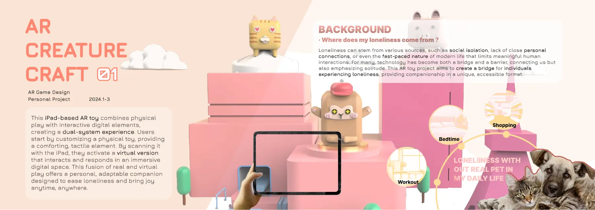
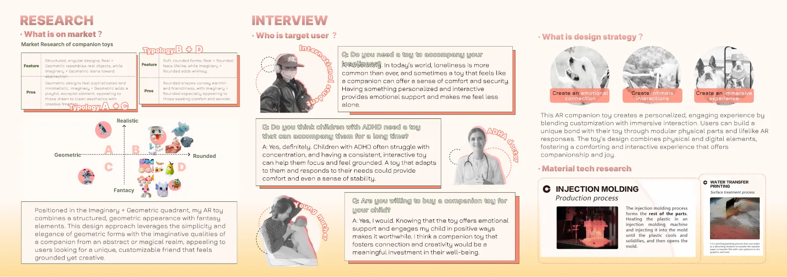
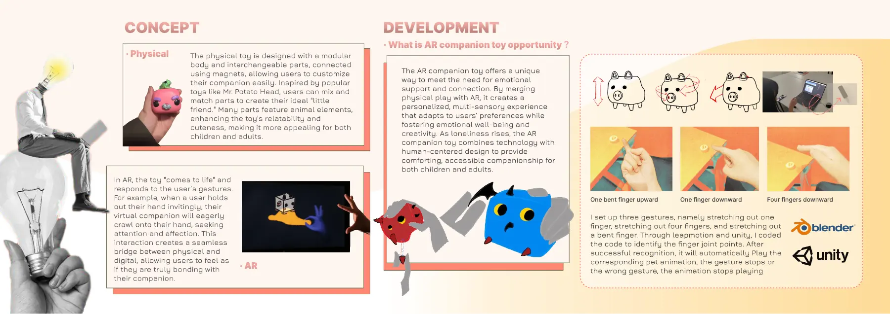
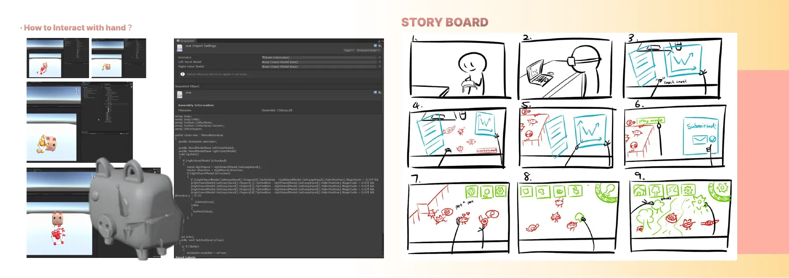
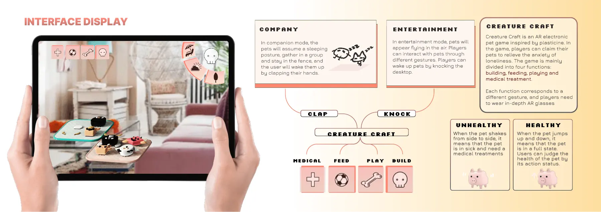

简介
孤独可能来自社交隔离、缺少亲密关系，也可能只是生活太忙。这个项目想看看，把实体玩耍和数字陪伴结合起来的玩具，能不能带来一点安慰。
调研和过程
- 把现有的陪伴玩具放在“写实—奇幻”“几何—圆润”两个维度上分类，找到还空着的位置。
- 访谈潜在用户，了解他们希望陪伴玩具是什么样的。
- 设计了磁吸可替换部件的玩具，让人可以拼出自己的宠物。
- 用 Leap Motion 设置了三种手指手势，在 Unity 里写了触发对应宠物动画的逻辑；用 Blender 建了角色模型。
- 画了体验故事板，设计了 iPad 界面，分陪伴和娱乐两种模式。
结果
一个用手势控制的 AR 原型和一套实体玩具概念。没有测量过它对孤独感的影响。
作品集页面









